透视学习 03——平行透视，分割透视矩形
不得不感叹，这书给人学爽了，有种看计算机书籍的感觉，系统，环环相扣，不断尝试建立心智模型。
前面学习了原线变线，学习了如何在各种距离上绘制同样的原线，这里该处理立方体了。
首先，为什么是立方体？因为一切复杂的形体，都可以看成是抽象几何体的组合，而一切抽象几何体，终究能够使用一个盒子给它包起来，即使用一个立方体去进行抽象，后续再对它进行切削，增补，得到实际形体。这一点，无论是宇宙飞船还是路灯甚至是人体，均如此。
平视平放的立方体（这是最典型的情况），它的透视状态只有两种——平行透视和余角透视。立方体有两对竖立面，有一对同画面平行时，即为平行透视，两对均不平行时，为余角透视。对矩形面同样如此——两对边线，有一对和画面平行时是平行透视，否则是余角透视。
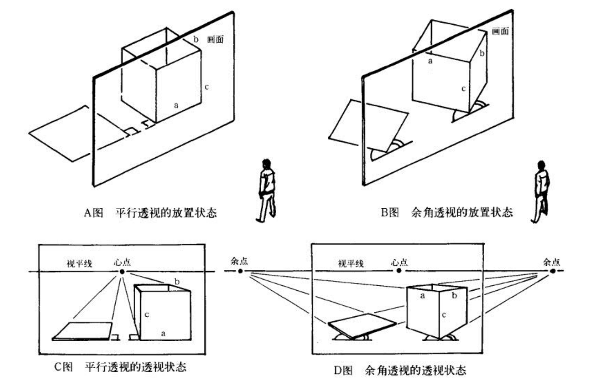
后面随这书的术语，立方体改称方物。
平行透视
平行透视即我们说的一点透视，它是说一个方物或一个矩形平面只有一个灭点，这个灭点是且仅能是心点（如果不在心点，那说明必然不止一个消失点）。
一点透视是比较常用的，能够方便引导观众视线。整个画面使用一点透视（和两点透视）布局时，通常会对画面进行裁剪，即只取视圈中的部分内容，反应到画面中，则是在不改变平视的视角的前提下，按需求调整视平线和心点的位置，从而在不引入三点透视的情况下得到俯视仰视的感觉。实际上，人平常看物体时中视线一般会比视平线低 10 度左右，因此把视平线往上安排一些是很自然的。下图是一些调整心点、视平线的示例。
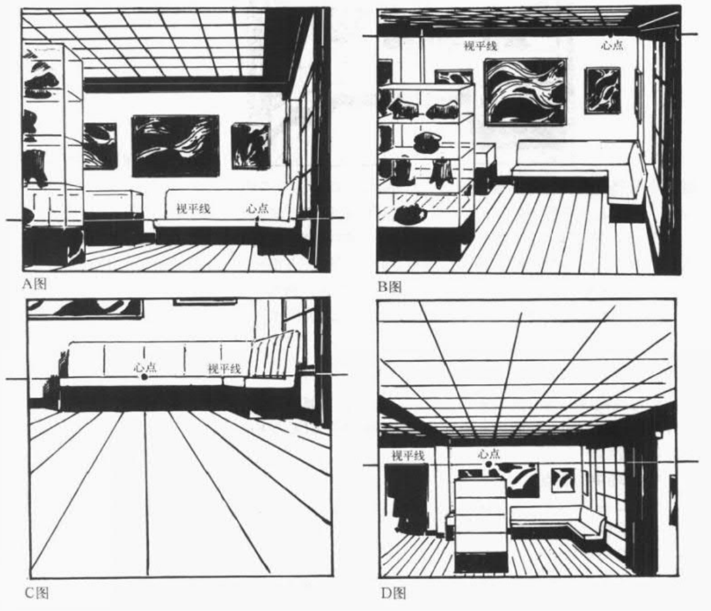
但这有前提——一般来说，心点和视平线不应当调整太过，比如放置到画面外，此时会感觉很别扭，需要引入两点透视（余角透视），如下图。
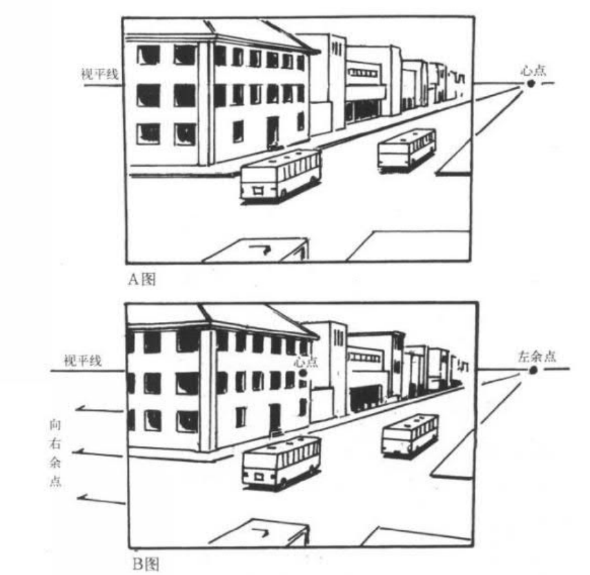
距点法定平行透视的深度
在之前研究的时候发现，不同焦距下，正方体往心点方向的线的深度是不一样的，当时我得出结论，一点透视无法确认深度的线条的长度；然而，通过距点，则可以得到平行透视的深度。因为规定了距点，我们就规定了焦距。
使用距点法定平行透视的深度的要点在于，指向距点方向的线和画面呈 45 度角，利用这个 45 度，我们能够根据水平原线得到和它等长的直角平变线（45度构造等腰直角三角形，此时一个直角边是水平原线，另一个直角边是直角平变线）。比如下图对原线 AB 作图得到和它等长的直角平变线 AC，从而定出正方形底面。下图中同时还演示了如何二分变线。
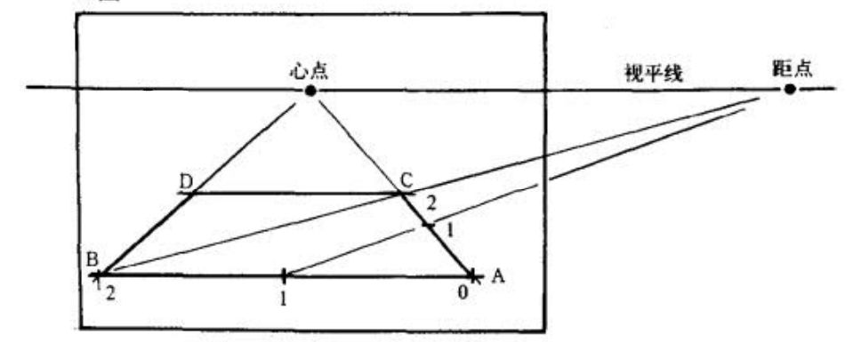
但这里我们的目的不是找正方形面，我们的目的是通过原线去定透视深度。这里就反其道而行之——我们先用原线定出所需的透视深度，在水平原线上找出这个深度对应的点，然后将它和距点连接，该连线和直角平变线的交点即为所求。如下面的平行透视矩形面，侧面宽度BC是正面宽度AB的2倍，我直接延长BA一倍得到C’，做它和距点的连线，和B心交点即为C。这里实际上是做了等腰直角三角形C’BC。
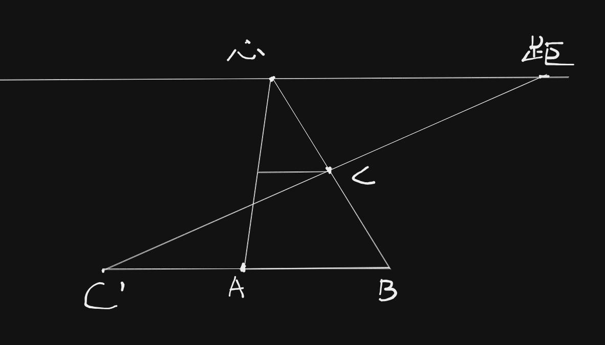
分距点法
分距点法使我们能够通过二分之一距点等点去定平行透视的深度，避免去找远在画面之外的距点。
首先研究一个问题——考虑两个不平行的其他角度平变线，设它们和画面的夹角分别为 $\alpha, \beta$，这时候心点和它们对应的消失点的长度的比例是怎样的？这是一个平面几何问题，绘制下面的俯视图：
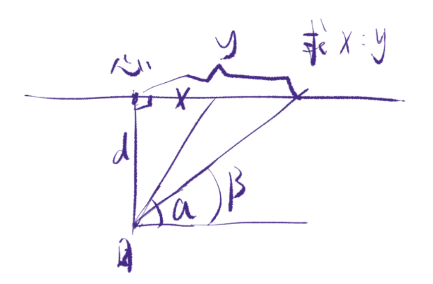
得到：
这个公式能做什么呢？考虑我们想做一个平行透视的正方形面 ABCD，先做出原线 AB，并标识出距点。下一步的正常方法是利用距点法求深度，但我们觉得距点太远了，我不想做和距点的连线，想干点别的，我们试着找到二分之一距点（线段心距的二分之一）玩玩？
把二分之一距点命名为距’，距’和 ABCD 的一个直角平变线的交点定为 C’，我们的目标是在不连线 A 距的情况下找出 C：
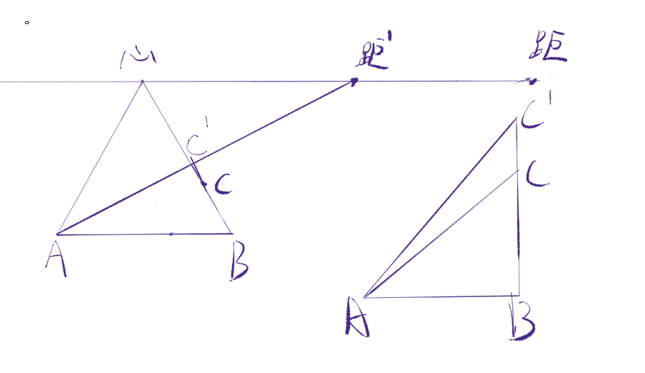
根据上面的公式，我们知道：
因此，有：
我们又知道，$AB=BC$，因此 $BC’=2AB$，我们向左倍增 AB 得到点 A’，从而能够做出来正方形面 A’BC’D’：
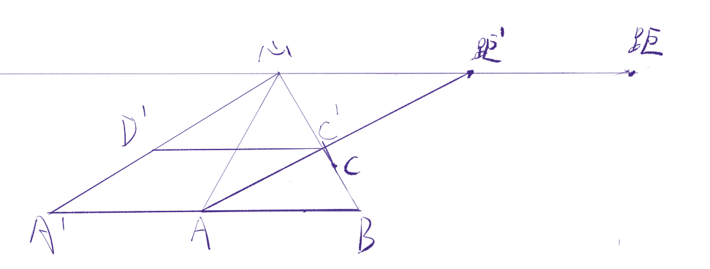
注意这里的步骤——我们通过原线 AB 和二分之一距点得到了边长为 2AB 的正方形面，但这里我要的边长是 AB，怎么办呢？我不使用原线 AB，而是取原线 AB 的中点 P，这时候我们就能通过原线 AP 和二分之一距点得到边长为 2AP，即 AB 的正方形面。如下图：
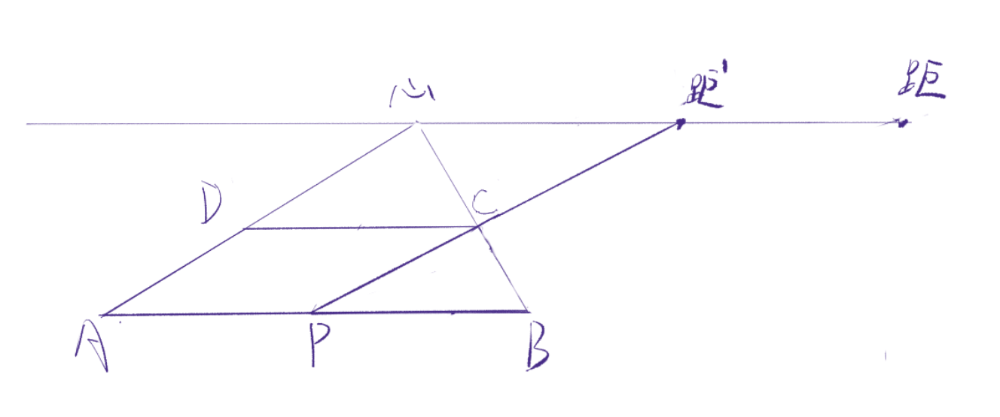
将这个结论更广泛一些——我们通过原线 AB 的 $\frac{a}{b}$ 的点，以及 $\frac{b-a}{b}$ 距点，就能得到边长为 AB 的正方形面。后面把 n 分之一距点称为 1/2 距，2/3 距这样。如下面利用 AB 的 2/3 和 1/3 距去找到深度：
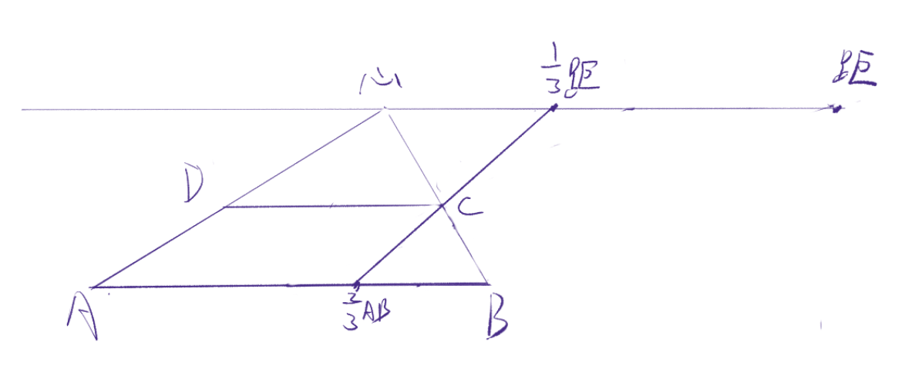
这个结论也可以直接在画面上使用三角形相似去得到，但这里没走这条路。
使用这种方法，就不需要再找距点了，用 1/2 距就行；这时候设置视圈为 53 度的话会特别方便，因为此时二分距点正好在视圈上。
分割透视矩形
透视图的一个典型问题是均等或任意分割一个透视矩形，或者倍增一个透视矩形，欣喜的是，这种分割是容易的，而且不挑矩形面和画面的关系——两对原线、一对原线一对变线、或是两对变线组成的矩形面，均使用同样的作图法。只不过是直接把平面尺规作图转化为透视图上的尺规作图。区别在于，对于两对变线的矩形面，等分点需要使用平行变线分割画出，而一对原线一对变线的矩形面的原线上的等分点可以直接测得。
下面均考察一对原线一对变线的情况，同样的操作同样可以迁移到两对变线的情况。
求中点，中线，以及任意等分点，对称分割就不学了，以前学过。
网格分割
网格分割允许同时找一个矩形面在水平和垂直两个方向上的分割。画师在两根原线上标注点来表示变线方向上的网格的数量和大小，依次连接这些点，然后找对角线和这些连线的焦点做原线即可：
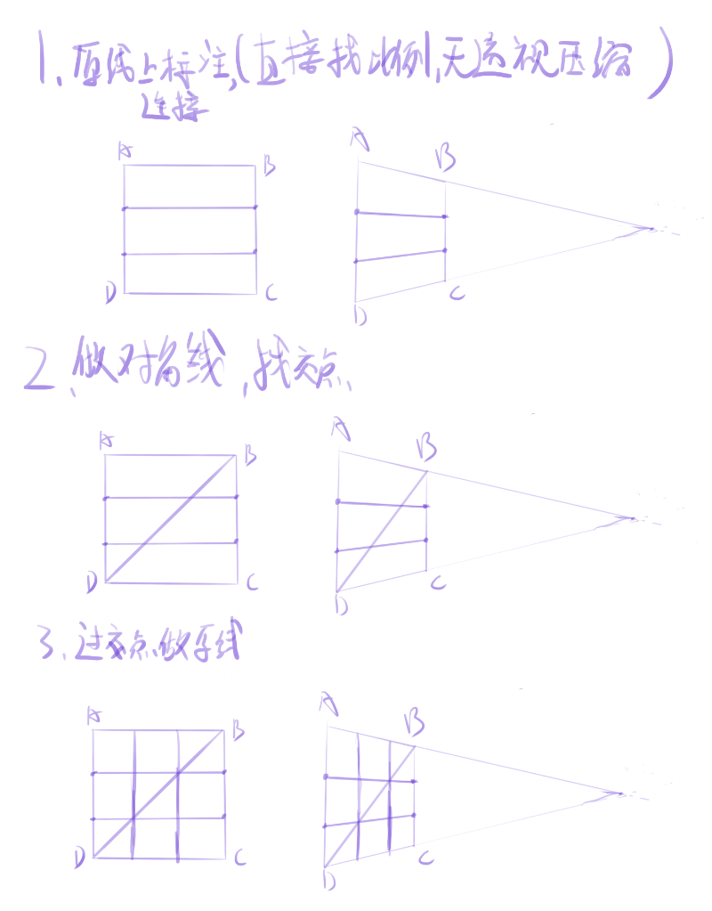
这个证明是好证的，简单的三角形相似。注意到，我们在原线方向上做三等分点，得到的效果是把矩形在变线方向上进行三等分。
然而实际上，上图中我们同时也可以得到二等分：
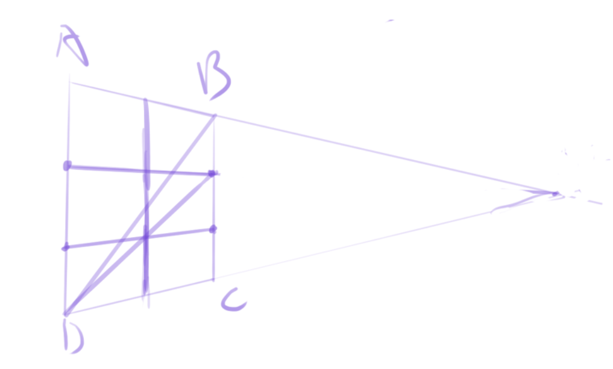
这也是通过相似证明的。这让我们能够非常方便地绘制 m 行 n 列的等距网格——如果行数大于列数，我们直接在原线上找 m 个等分点，然后取第 n 个等分点做对角线。而列数大于行数的时候，就需要分别做 m 等分点和 n 等分点了。
下图绘制 5x3 网格（其实目测找五等分也挺难的，不如先作图得到四等分再作图得到五等分）：
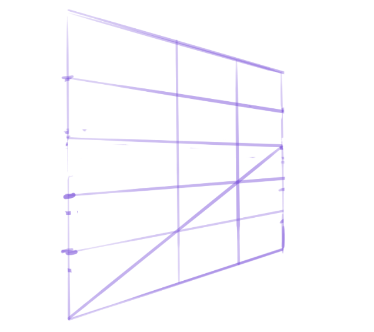
然后是 3x5 网格：
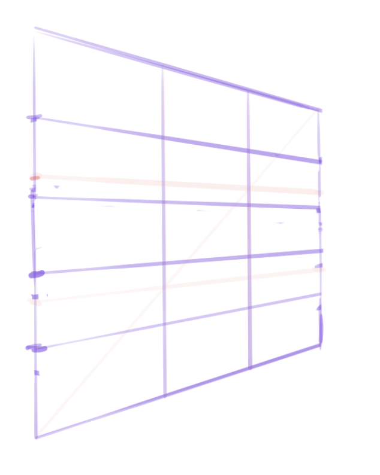
更广泛地说，我们在原线方向上可以做任意的点去把矩形在变线方向上做划分；而在原线上做划分，只需要直接做测量即可。如下图在变线方向上做了不等距分割，绘制自然景物时这是很常见的。
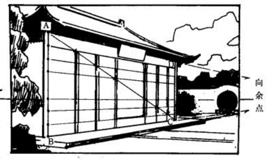
平行变线分割
这个以前也学过，还写过交互式的示例，当时不懂如何证明，现在了解了原线变线，就能够说出个所以然了。
可以说，上面的网格分割法利用了一对原线、一对变线的矩形面的性质，它不需要找变线的灭点就能做分割；而这里的平行变线分割法则不受此限，但必须要找灭点；平行变线分割法的关键在于从变线处生造出一条原线，然后构造该原线和一条变线所在的平面，利用该原线来进行分割。在这里，一旦引入了原线，问题就变成处理这个原线了，这时候问题变得和网格分割法类似。
平行变线分割法利用一个规律——对任意平面，该平面上的一个原线在画面上总是平行于这个平面的灭线的。这意味着，我们只要找到一个平面的一根原线，我们就能够找到这个平面的灭线。
考虑变线 AB 和它的消失点，我们可以任意绘制直线 AP，然后规定 AP 为原线，这时候我们就构造了平面 ABP，同时也得到了它的灭线：
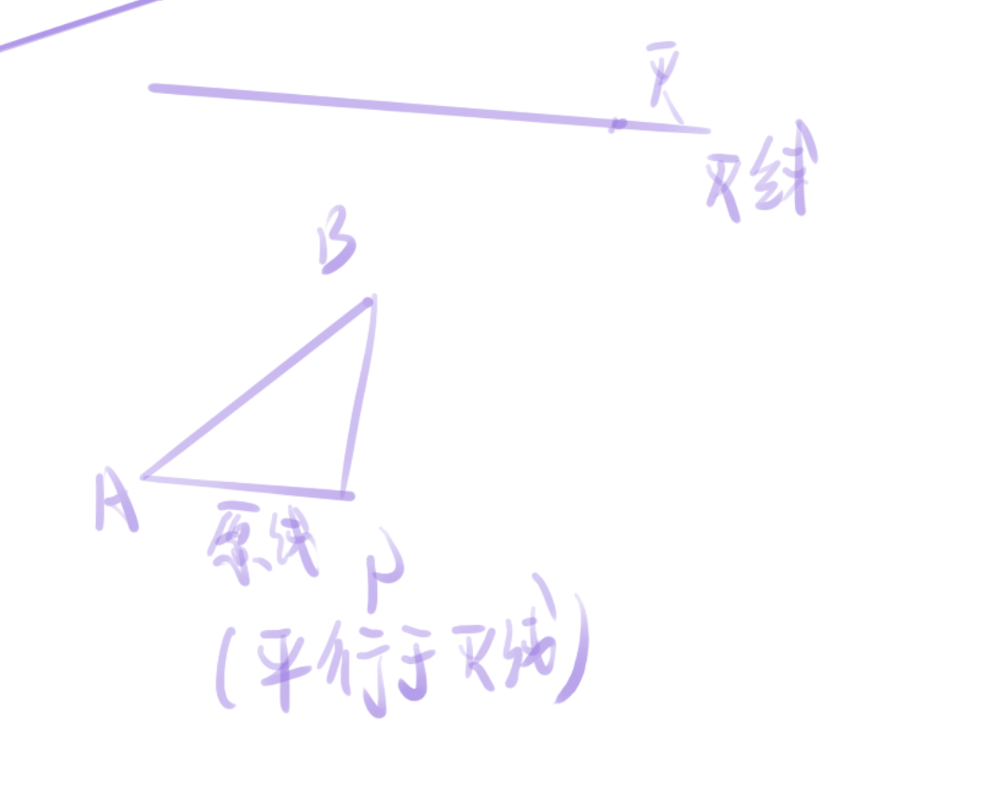
AP 为原线，我们可以在 AP 上任意取一些点，然后过这些点做一些处在平面 ABP 上，同时互相平行的直线；我们知道，这些互相平行的直线会交于一个灭点。下图展示了四等分 AP 以及随意绘制的平行线；这里的“俯视图”是沿平面 ABP 的法线方向看的。
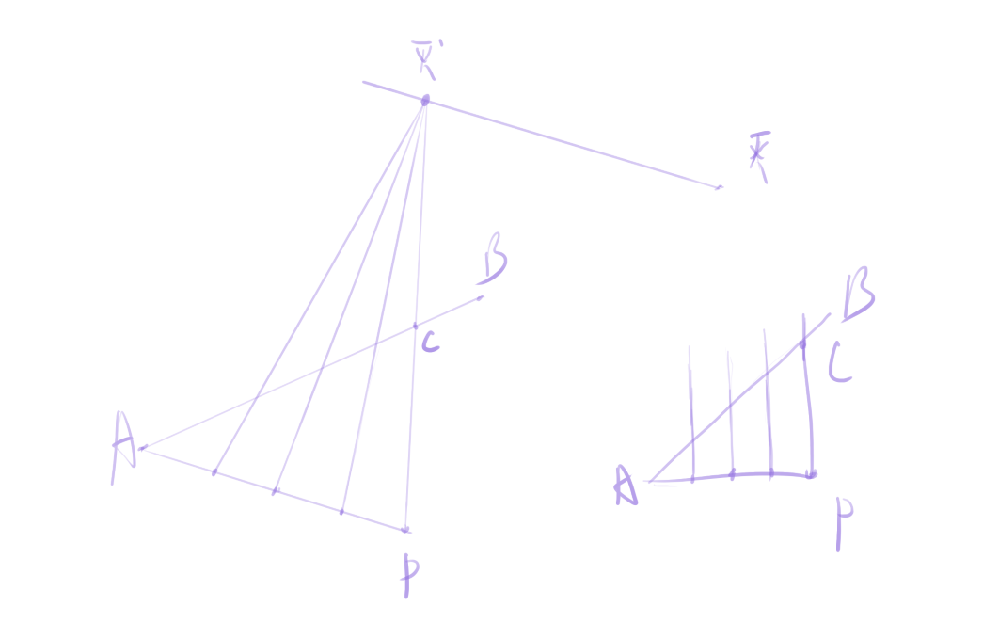
我们能注意到，我们在 AP 上做了四等分，然后做平行线；这里的平行线和 AC 的交点正好把 AC 也四等分了（通过三角形相似证得）。以及，这里的平行线的方向是任意选定的，我只要故意让平行线的方向平行于 BP，此时 C 和 B 点就重合了，我们就能够把 AB 给进行四等分。换成在透视图中的操作的话，就是我们延长 BP 找到它和灭线的交点作为灭点。
这里做了一堆平行线，这些平行线是变线，因此该方法称为平行变线分割。
书中的平行变线分割法可以说是狭义的，它始终在考虑视平线，没有考虑灭线不平行于视平线的情况（不知道书里后面会不会提到这个，但至少在这里没提到）。
进行平行变线分割法时，如何正确选择原线就非常重要，要选择一个适合作图的原线 AP；通常选择是水平原线或垂直原线，因为我们一般知道灭点在画面的水平位置或垂直位置，比如一点、二点透视时，灭点在视平线上。下面是一个两对变线的面的例子，AP 选用水平原线（也可让 AP 在画面上平行于 CD，这也很好做）：
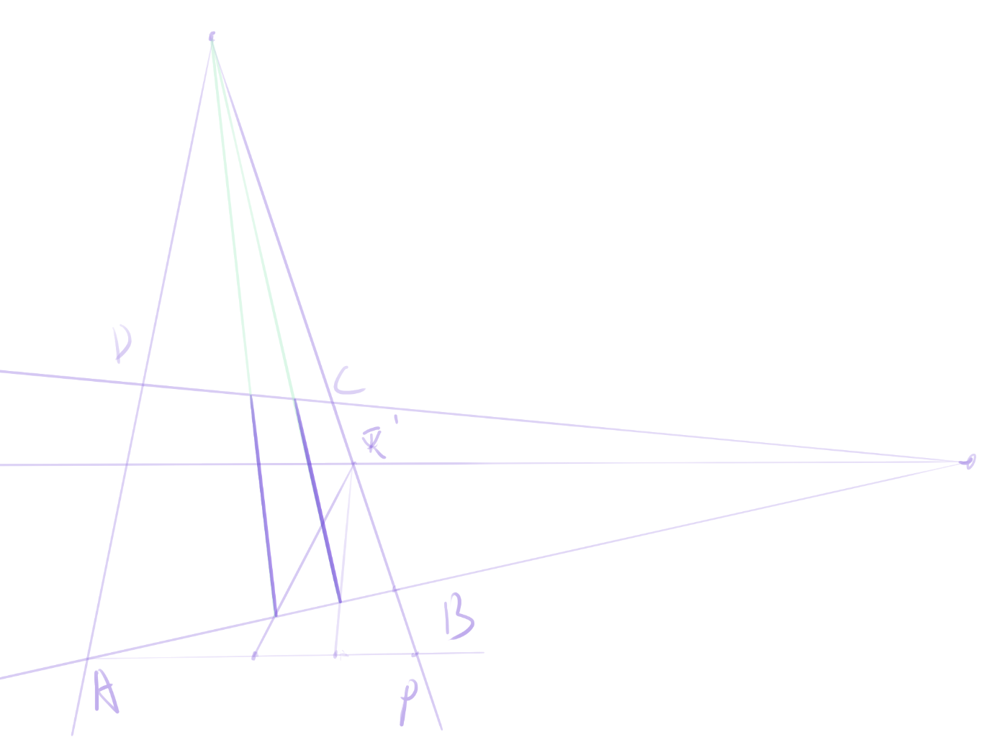
平行变线分割法的缺点在于它需要有一个辅助灭点，并需要做点和辅助灭点的连线，徒手绘图时这必定会引入误差，按理说只有对角线法引入的误差最小。
本博客所有文章除特别声明外，均采用 CC BY-NC-SA 4.0 协议 ，转载请注明出处！